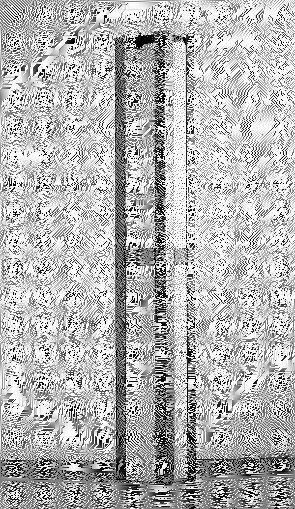
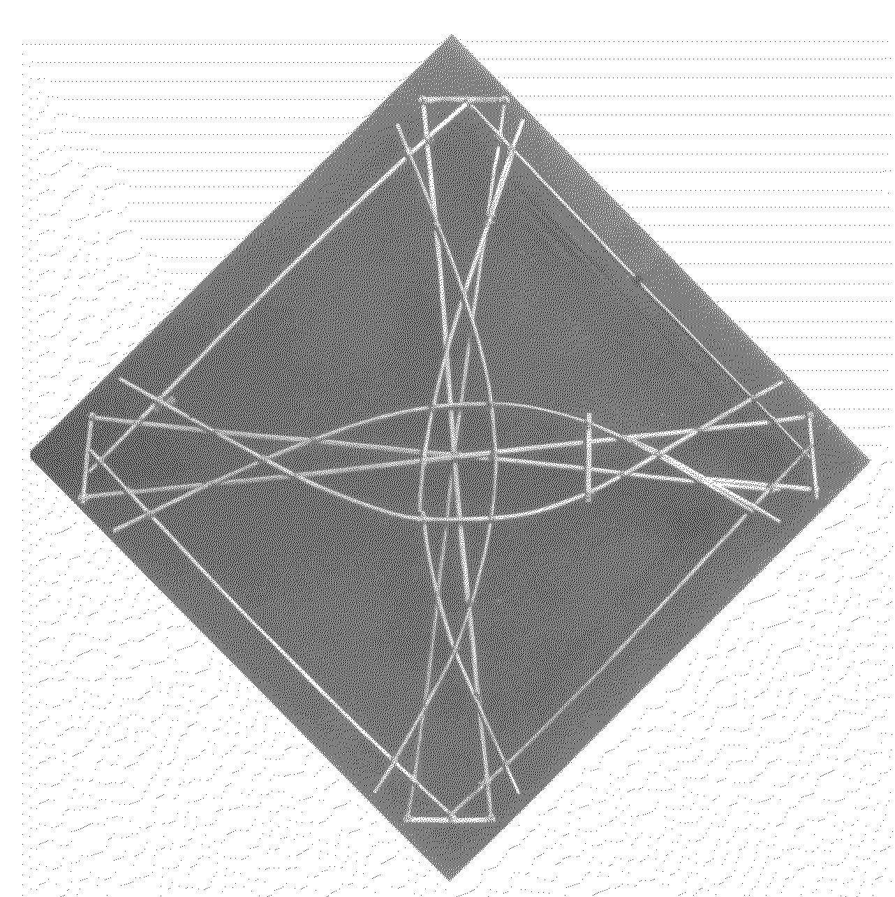
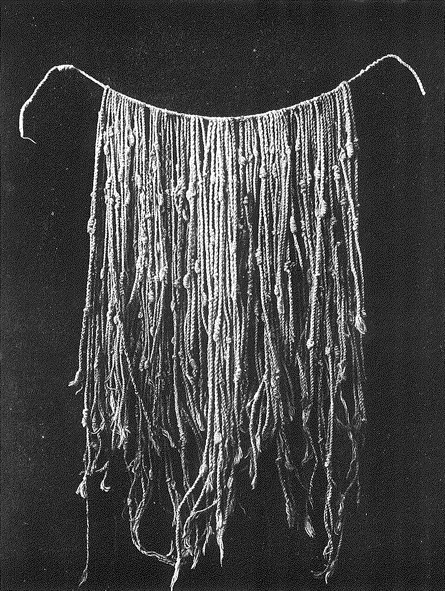
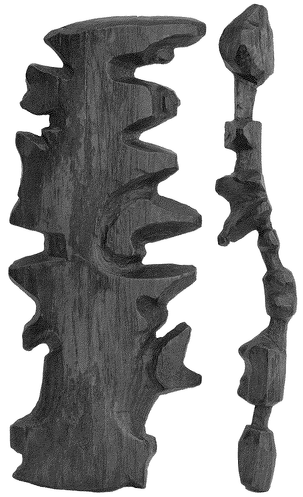

Datartefact
DatartefactMonte Sierpe "Band of Holes"
Author Chincha Kingdom & Inca Empire
Date of creation 1100-1600
Exceptional topographical site in Peru containing approximately 5,000 regularly spaced holes in the ground, used for goods exchange and accounting during the Inca Empire.



A Number Between Zero and One
Author Siah Armajani
Date of creation 1969
A Number Between Zero and One is a conceptual sculpture by Iranian-American artist Siah Armajani, consisting of a stack of paper printouts of an imaginary number—10^-205,714,079—one requiring 25,974 sheets and twenty-eight hours to print.


Mattang
Author Marshallese navigators
Date of creation 1800-1950
The mattang is an abstract stick chart presentation of how swells refract around an island and meet in a series of nodes. They were used a teaching and mnemonic devices, not for navigation.

Inca-Style Khipu
Author Leland L. Locke's book
Date of creation 1300-1500
Inca-style khipus illustrating one of the most important book in the history of khipus deciphering, in which L. Locke determined khipus were numerical devices encoded in base 10. The book was published in 1912.



Ammassalik Coastline Sculpture
Author Kunit fra Umivik (Inuit hunter from Greenland)
Date of creation 1885
A sculpted guide to a stretch of coast north of Ammassalik, made by a local hunter to explain navigation to the Danish expedition captain Gustav Holm, who later wrote his deep despise for Inuit geographical artefacts.